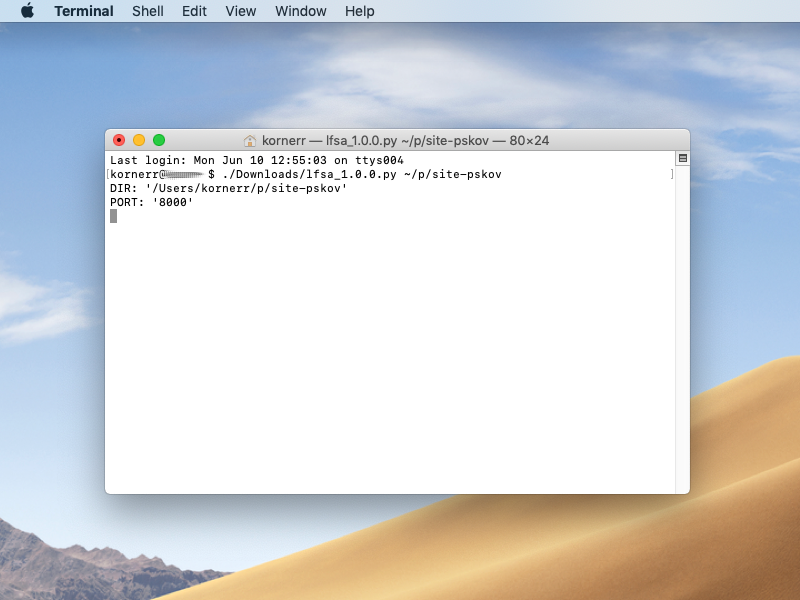
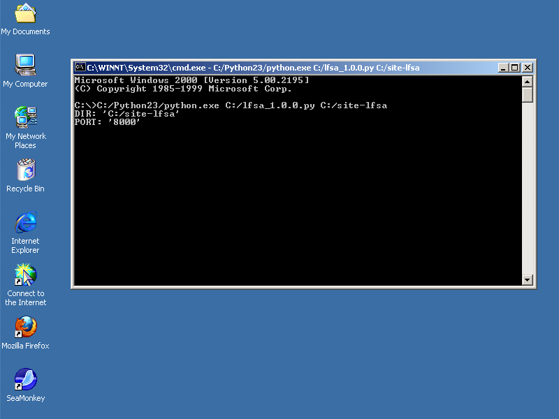

Local File System Access (LFSA) is:
Client Side Web Apps run solely on your device, they are not related to cloud solutions in any way: nobody can pull the plug on you. CSWAs may use LFSA to keep data locally so that you could have complete control of your data.
PSKOV static site generator is the first CSWA to use LFSA.
If you use Linux or macOS released after 2005 (yes, 2005), you only need to download lfsa_1.0.0.py.
If you use Windows 2000 or newer (excluding Windows ME), you need to:
If you use Linux or macOS, run LFSA in terminal this way:
/path/to/lfsa_1.0.0.py /path/to/dir
Here's how it looks like on macOS Mojave:

If you use Windows, run LFSA in CMD this way:
C:/path/to/Python/installation/python.exe C:/path/to/lfsa_1.0.0.py C:/path/to/dir
Here's how it looks like on Windows 2000:

As you noticed, LFSA can run on really old operating systems dating back to 2000. That's intentional: we care about users, so we want to cover as many users as possible.